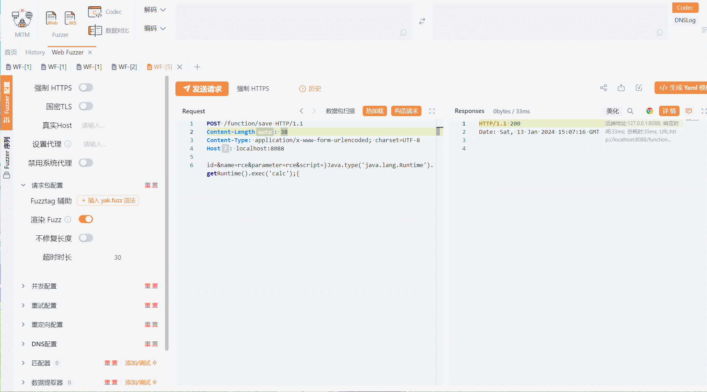
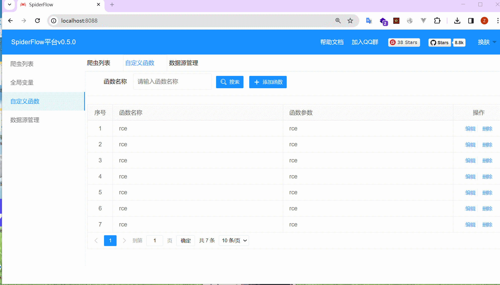

spider-flow

spider-flow
First create a function capable of RCE using the following exploit method for CVE-2024-0915.
1 | POST /function/save |

It is recommended to send the payload several times more
Then we delete this function on the front end and find that the payload is still executed.

- 本文标题：spider-flow
- 本文作者：二十八华生
- 创建时间：2024-01-13 23:25:21
- 本文链接：2024/01/13/spider-flow/
- 版权声明：本博客所有文章除特别声明外，均采用 BY-NC-SA 许可协议。转载请注明出处！